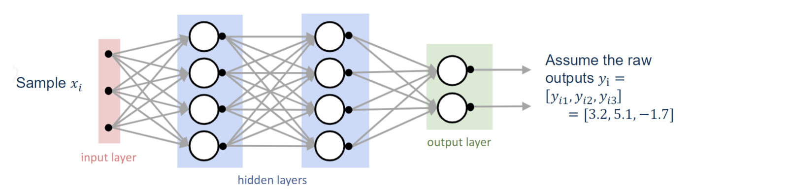
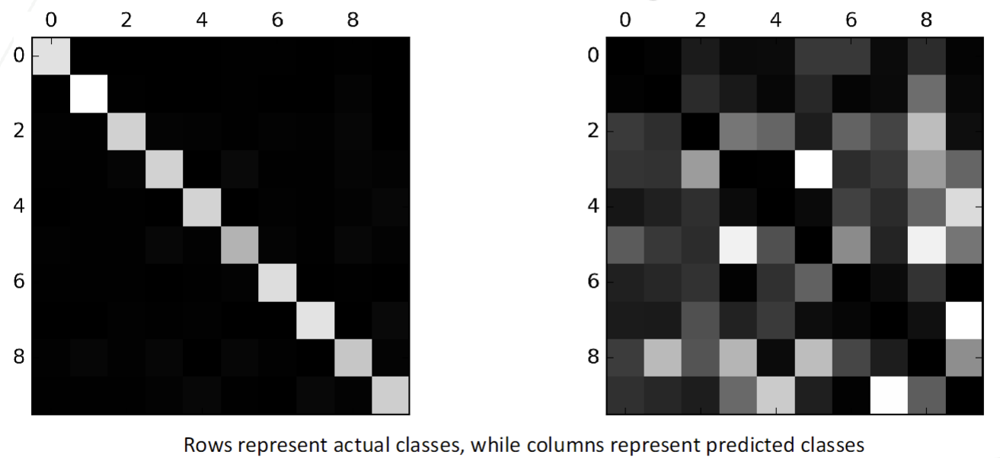
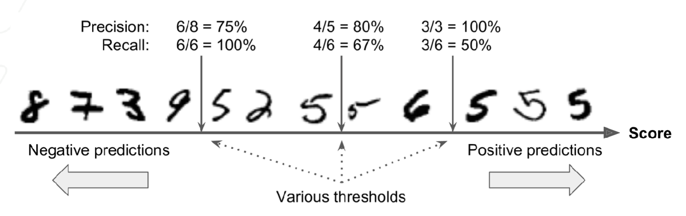
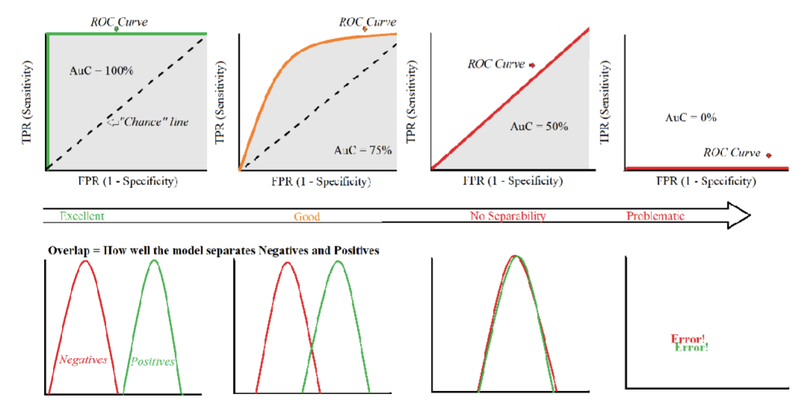
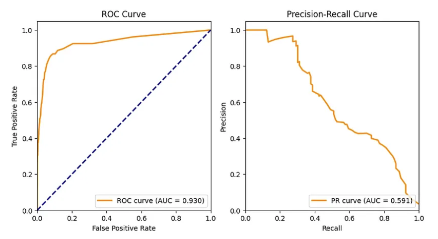

Contributors: Dr. Ahmad Mustafa, Dr. Motaz Alfarraj, Dr. Ashraf Alattar, Dr. Chen Zhou
Teaching Assistants with remarkable contributions include: Kuo-Wei Lai, Wuyang Du, Shiva Mahato, Michael Zhou, Ninghan Zhong
Disclaimer: All content of these notes are part of this course at Georgia Tech. Any re-use or distribution is not permitted without pre-approved permission. All these notes belong to, created by, and copyrighted for Ghassan AlRegib and Mohit Prabhushankar, Georgia Tech, 2021–2028.
License: These lecture notes are licensed under the Creative Commons Attribution-NonCommercial-ShareAlike 4.0 International License.
Errata: Please submit any errata you find using the following form: Errata Form for FunML Textbook or visit: https://forms.office.com/r/fbg9dMWPgY
1.1 Lecture Objectives
In the previous lecture, we discussed Artificial Neural Networks. This lecture summarizes Back propagation in Artificial Neural Networks and a high level overview of how to train MLP for image classification using Artificial Neural Networks. The bulk of this lecture is about classifier performance evaluation. We look into numerous methods of analyzing the performance of classifiers using cross-validation, and understanding precision and recall. We discuss the confusion matrix and see the trade off between precision and recall trade off, leading us to the ROC curve and how to interpret it.
1.2 Back propagation Summary

The sample \(x_i\) goes through some hidden layers and outputs as some raw logits, ie. \(y_i\) = [3.2, 5.1, -1.7]. These raw logits are transformed into a probability using the softmax function. \[f(y_{ij}) = \frac{e^{y_{ij}}}{\sum_k e^{y_{ik}}}\] The raw logits, [3.2, 5.1, -1.7] are converted into the probability distribution, [0.13, 0.87, 0.001], which can be interpreted as this sample \(x_i\) belongs to \(y_2\) with a 87% confidence. During the inference, the goal is to predict the class with the highest probability with softmax activation: \(\text{argmax}_j f(y_{ij})\). During training, for every sample, we set the ground-truth label as a one-hot vector \([1,0,...,0]^T\) with 1 for the correct class and 0 for every other class. Back propagate the error and repeat for every sample. For instance, if the one-hot ground-truth is [1, 0, 0], but the model predicted that \(x_i\) belongs to \(y_2\), which is incorrect. We create a loss function to obtain the error between them and back propagate the vector with the number 1 at the position corresponding to the desired class.
1.3 Image Classification
Image classification is the task of assigning a label to an input image based on its content, typically by mapping the pixel values of the image to probabilities across various categories. This can be modeled as a linear function using parameters such as weights and biases. The general form of this function is given by: \[\hat{Y} = \phi(XW^T+b^T)\]
\(X \in \mathbb{R}^{N\times P}\) : dataset containing N vectorized images
\(P = HWC\) : the number of pixels (features) of each image
\(\hat{Y} \in \mathbb{R}^{N \times K}\) : predicted class probabilities over classes \(1,2,\dots,K\)
\(\phi (X,W,b)\) : the activation function
\(W \in \mathbb{R}^{P \times K}\) : the weight matrix
\(b \in \mathbb{R}^{K}\) : the bias vector
Given a 32x32 RGB image as the input, we can write the linear function as: \[\phi \left( \begin{pmatrix} 0.2 & 2.1 \\ -0.5 & 0.0 \\ 0.1 & 0.25 \\ 2.0 & 0.2 \\ 1.5 & -0.3 \\ \vdots & \vdots \\ 1.3 & 1.2 \end{pmatrix}^T \begin{pmatrix} 56 \\ 231 \\ 24 \\ 188 \\ 75 \\ \vdots \\ 32 \end{pmatrix} + \begin{pmatrix} 0.2 \\ 2.4 \end{pmatrix} \right) = \begin{pmatrix} 0.8 \\ 0.2 \end{pmatrix}\]
where the parameters correspond to: \(w^T \in \mathbb{R}^{2 \times(32)(32)(3)}\) , \(x_i \in \mathbb{R}^{(32)(32)(3) \times 1}\), \(b \in \mathbb{R}^{2 \times 1}\), \(y_i \in \mathbb{R}^{2 \times 1}\)
In this example, the weight matrix \(w^T\) and bias vector \(b\) are used to compute the class scores, which are then transformed into probabilities for classification.
1.3.1 Example Datasets
The Modified National Institute of Standards and Technology (MNIST) database is a large dataset of handwritten digits. It has 70,000 gray scale images of digits across 10 classes: (0,1,2,3,4,5,6,7,8,9). Each image is 28x28.
The Canadian Institute For Advanced Research-10 (CIFAR-10) database are labeled subsets of the 80 million tiny images. It consists of 60000 32x32 colour images in 10 classes, with 6000 images per class. This is split into 50000 training images and 10000 test images.
1.4 Terminologies
In this course, several fundamental training terms will be used repeatedly. The batch size refers to the number of training samples processed before the model updates its parameters. An epoch is one complete pass through the entire training dataset. A round (also called an iteration/step) denotes a single forward and backward pass through the model using one batch of data.
It is also important to distinguish between different dataset splits. The training set is used to train the model by adjusting its weights. The validation set is used during training to tune hyperparameters and monitor for overfitting, helping guide model design decisions. The testing set is used only after training is complete to evaluate model performance on unseen data and provide an unbiased assessment of generalization.
1.4.1 Model Validation
Model validation refers to the collection of techniques used to evaluate how well a trained model will perform on unseen data. The central challenge in machine learning is not merely achieving high performance on the data used to train the model, but ensuring that the learned patterns generalize beyond the training examples. To address this, the available dataset is typically divided into separate subsets with distinct roles during the modeling process.
A standard approach is the training–validation–test split. The training set is used to fit the model parameters; this is the data from which the model directly learns patterns. The validation set is used during development to assess model performance and guide decisions such as hyperparameter tuning, model selection, and early stopping. Although the model is evaluated on validation data, it does not learn from it in the same way as the training data. Finally, the test set is kept completely separate and is used only after the model design is finalized. Its purpose is to provide an unbiased estimate of the model’s performance on new, unseen data.
Learning curves are another important tool in model validation. A learning curve plots training and validation performance as a function of training set size. By observing how these curves evolve, we can gain insight into the model’s generalization behavior. A large gap between training and validation performance typically indicates overfitting, where the model memorizes the training data but fails to generalize. Conversely, if both curves are low and close together, the model may be underfitting, suggesting that it lacks sufficient capacity to capture the underlying structure of the data. Learning curves are discussed more in detail in Section 4.3. They are particularly useful for diagnosing overfitting and underfitting.
Cross-validation provides a more robust method for estimating generalization performance, particularly when the dataset is limited. Instead of relying on a single train/validation split, the data is partitioned into multiple folds. The model is trained repeatedly, each time using a different fold as the validation set and the remaining folds for training. The results are then averaged to obtain a more reliable estimate of performance. Cross-validation reduces the dependence on a particular split and helps ensure that the evaluation reflects the model’s expected behavior on unseen data.
To make this concrete, suppose we have a dataset of 60,000 samples. Our goal is not for the model to memorize all 60,000 examples, but to learn the underlying structure of the data. When a model performs extremely well on the training set but poorly on new data, it is said to suffer from overfitting. Overfitting occurs when the model fits too closely to the training distribution and fails to capture the general patterns needed for accurate prediction.
To monitor this, we split the dataset into separate subsets. For example, we might use 50,000 samples for the training set and 10,000 samples for the validation set. During training, the model updates its weights using only the training data. At the end of each epoch, we evaluate performance on the validation set by computing the validation loss. The validation data is never used to update gradients; it is only used for evaluation. By tracking validation performance, we can detect overfitting and select the best model configuration.
1.4.2 Train, Validation, and Test Splits
In supervised learning, it is essential to clearly separate the roles of the training, validation, and test datasets. The training dataset is the portion of the data used to learn the model parameters. The model directly updates its weights based on this data through optimization procedures such as gradient descent.
The validation dataset is used to monitor performance during model development. It helps guide hyperparameter tuning, architecture decisions, and other design choices. While the model’s performance is evaluated on validation data, the data itself is not used to update model parameters. In practice, validation may be implemented through a simple hold-out set or through cross-validation.
The test dataset serves as the final benchmark. It is only used once the model has been fully trained and all design decisions have been made. Because the test data is never seen during training or validation, it provides the most unbiased estimate of how the model will perform in real-world deployment. To be meaningful, the test set should reflect the true data distribution that the model is expected to encounter.
1.4.2.1 Typical Data Split Ratios
In practice, datasets are commonly divided using approximate ratios such as:
60–70% training
10–20% validation
20–30% testing
Larger datasets allow smaller validation/test fractions, while smaller datasets often rely more heavily on cross-validation to make efficient use of data.

1.4.3 Learning Curves
A learning curve is a graphical representation that shows how a model’s performance changes as the size of the training dataset increases. It helps diagnose issues like overfitting and underfitting. When the training set is very small, the model can nearly memorize the data, so the training error starts very low. As more training data is added, the task becomes harder to fit perfectly, causing the training error to increase slightly before stabilizing. In contrast, validation error starts high when training data is limited and decreases as more training data is added, since the model learns patterns that generalize better to unseen data.
The general procedure for generating learning curves, assuming n = 100 samples:
Set aside validation set (e.g., v = 20 samples)
For k = 1 to n - v
Take the first k samples as one training dataset
Fit the model on the training set and evaluate it on the validation set
Retain the training score and the evaluation score and discard the model
Plot the training and evaluation scores recorded in the iterations above against training set sizes

For more visualizations check out this tool.
1.5 Performance Evaluation
1.5.1 Hyper parameters
A hyper parameter is a configuration setting used to control the learning process of a machine learning model, significantly impacting its performance and effectiveness. Unlike model parameters, which are learned from the training data, hyper parameters must be set prior to training and can often require tuning to achieve optimal results. Here are some common hyper parameters for various algorithms:
k-Nearest Neighbor:
Number of neighbors (k): a smaller value of k can lead to over fitting, as the model becomes sensitive to noise in the training data, while a larger k may oversimplify the model, increasing bias toward the majority classes and potentially missing out on important patterns.
Support Vector Machines:
Regularization parameter (C): balances the trade-off between achieving a low training error and a low testing error. A smaller C value allows for a larger margin between classes, enhancing the model’s robustness against outliers, but may result in under fitting. Conversely, a larger C can lead to a more complex model that fits the training data closely, risking over fitting.
Artificial Neural Networks:
Number of hidden layers (K): a larger value increases model capacity to learn from massive data on complex tasks
Learning rate (\(\alpha\)): a learning rate that is too high can lead to unstable learning, causing the model to diverge, while a rate that is too low may result in slow convergence and getting stuck in undesirable local minima
1.5.2 Cross-validation
Cross-validation is used to compare the efficacy of various hyper parameters throughout the tuning process. The model is trained and tested for each combination of hyper parameters, and the results are summarized over k iterations to provide an overall performance score. It is more rigorous and randomized than single validation split, helping to mitigate issues like over fitting and ensuring that the model generalizes well to unseen data.. The general procedure involves the following steps:
Shuffle the dataset randomly: to prevent any ordering bias and ensure that each fold is representative of the entire dataset
Split the dataset into k groups: divided into k equally sized groups or folds
For each group
Take that group as a hold-out or validation dataset
Combine the remaining k-1 groups as one training dataset
Fit a model on the training set and evaluate it on the validation (holdout) set
Retain the evaluation scores and discard the model
Average the scores of the model to get a single k-fold validation score

1.5.3 Accuracy, Confusion Matrix
Accuracy is a metric that measures how often a machine learning model correctly predicts the outcome. It can be written as: \[\text{Accuracy} = \frac{\text{\# of correctly labeled samples}}{\text{Total \# of samples}}\] If you have imbalanced classes, accuracy is less useful since it gives equal weight to the model’s ability to predict all categories, which can be misleading and disguise low performance on the target class.
| Q# | Answer Key | Your Answer | Grading | ? |
|---|---|---|---|---|
| 1 | F | T | FP | |
| 2 | F | F | TN | |
| 3 | T | T | TP | |
| 4 | F | F | TN | |
| 5 | T | T | TP | |
| 6 | T | F | FN | |
| 7 | T | T | TP | |
| 8 | F | F | TN | |
| 9 | F | T | FP | |
| 10 | F | F | TN |
A better way to analyze the accuracy of your model is by evaluating the confusion matrix, which consists of:
True Positive (TP): Positive and successfully accepted
False Positive (FP): Negative, but mistakenly accepted
True Negative (TN): Negative and successfully rejected
False Negative (FN): Positive, but mistakenly rejected
This can be better visualized in a confusion matrix, which allows you to evaluate the precision and recall of your model.
| Actual Value |
Prediction outcome | |||
| P | N | |||
| P | ||||
| N | ||||
1.5.3.1 Example: Multi-class Confusion Matrix

A confusion matrix is not limited to a True/False table but can be generated for all multi-class classifiers. For instance, the confusion matrix below compares 3 different classes: Apple, Orange, and Mango. When analyzing the confusion matrix, the diagonal corresponds to correct predictions for each class. For example, Apple has 7 correct predictions, which represents the True Positives (TP) for Apple when viewed in a one-vs-rest sense. Here we treat ’Apple’ as the positive class and ’Orange,Mango’ as negative.
For Apple: The True Negatives (TN) are all entries that are neither in the Apple row nor the Apple column: TN = (2 + 3 + 2 + 1) = 8.
The False Positives (FP) are the samples predicted as Apple but belonging to other classes: FP = (8 + 9) = 17.
The False Negatives (FN) are Apple samples predicted as another class: FN = (1 + 3) = 4.
From this we can calculate: Precision = 7 / (7 + 17) = 0.29,
Recall = 7 / (7 + 4) = 0.64,
F1-score = 2 × (0.29 × 0.64) / (0.29 + 0.64) = 0.40.

An interesting question in the lecture was about which matrix has the a higher error. In these matrices, black represents 0 and white represents 256. In the left matrix, the diagonal is shades white, while the rest is darker. This tells us that there is a very high TP and a low FP and FN, resulting in high precision and recall and overall low error. The second matrix on the right however is very scattered and has a diagonal of black squares. This means that there are little to no TP, meaning low precision and recall and overall high error.
1.5.4 Precision, Recall, and F1 Score
In classification problems, evaluating model performance requires more than simply measuring overall accuracy, especially when classes are imbalanced or when different types of errors carry different costs. Three fundamental metrics used to analyze classifier behavior are precision, recall, and the F1 score. Each metric captures a different aspect of prediction quality.
Precision is defined as \[\text{Precision} = \frac{TP}{TP + FP},\] and measures the proportion of predicted positive samples that are actually positive. In other words, precision answers the question: “Of all the samples the model labeled as positive, how many were correct?” Precision becomes particularly important when the cost of false positives is high (e.g., flagging important emails as spam).
Recall is defined as \[\text{Recall} = \frac{TP}{TP + FN},\] and measures the proportion of actual positive samples that were correctly identified by the model. It answers the question: “Of all the truly positive samples, how many did the model successfully detect?” Recall is especially important when false negatives are costly (e.g., missing a disease in medical diagnosis).
Because precision and recall often trade off against each other, it is useful to combine them into a single metric. The F1 score is defined as the harmonic mean of precision and recall: \[\text{F1 Score} = 2 \times \frac{\text{Precision} \times \text{Recall}}{\text{Precision} + \text{Recall}}.\] The harmonic mean penalizes extreme imbalances between precision and recall, meaning that a high F1 score can only be achieved when both metrics are reasonably high.
1.5.5 Precision–Recall Trade-off (Decision Threshold)
Many classifiers output a score (e.g., probability or confidence) and then apply a decision threshold to convert scores into class labels. Changing this threshold moves the classifier along a trade-off curve: a stricter threshold predicts fewer positives (often higher precision, lower recall), while a softer threshold predicts more positives (often higher recall, lower precision).
Equivalently, increasing the threshold typically decreases the number of false positives (FP), which tends to increase precision, but increases the number of false negatives (FN), which tends to decrease recall. The opposite happens when the threshold is decreased. Which operating point is best depends on the application costs (e.g., prioritize recall when missing positives is costly; prioritize precision when false alarms are costly).
1.5.5.1 Illustrative Example
Suppose a classifier predicts 5 samples as positive, of which 3 are correct, and there are 4 true positive samples in total in the dataset. Then \[P = \frac{TP}{TP+FP} = \frac{3}{5} = 0.6, \qquad R = \frac{TP}{TP+FN} = \frac{3}{4} = 0.75,\] and the F1 score is \[F_1 = 2 \times \frac{PR}{P+R} = 2 \times \frac{0.6 \times 0.75}{0.6 + 0.75} = 0.667.\] This illustrates how the harmonic mean penalizes imbalance between precision and recall.
1.5.5.2 Visualizing the Threshold Effect

The diagram above shows how moving the threshold changes which samples are labeled positive, thereby changing the counts of FP and FN. As the threshold increases, precision often improves (fewer FP) while recall often decreases (more FN).

The curve above visualizes this relationship continuously across thresholds: low thresholds tend to yield high recall / lower precision, while high thresholds tend to yield higher precision / lower recall. Selecting a threshold means choosing an operating point along this trade-off.
1.5.6 ROC Curve
The Receiver Operating Characteristic (ROC) curve evaluates a binary classifier across all decision thresholds by plotting the True Positive Rate (TPR) versus the False Positive Rate (FPR). Each threshold produces one point on the curve.
\[\text{TPR (Recall/Sensitivity)} = \frac{TP}{TP + FN}, \qquad \text{FPR} = \frac{FP}{FP + TN}.\] Equivalently, Specificity (True Negative Rate) is \[\text{TNR (Specificity)} = \frac{TN}{TN + FP} = 1 - \text{FPR}.\]

A useful interpretation is that ROC focuses on the classifier’s ranking behavior: how well it separates positive examples from negative ones as the threshold changes.
1.5.7 Area Under the ROC Curve (AUC-ROC)

The Area Under the ROC Curve (AUC-ROC) summarizes ROC performance as a single number in \([0,1]\). One interpretation is: AUC-ROC is the probability that a randomly chosen positive example receives a higher score than a randomly chosen negative example. AUC-ROC \(=1\) indicates perfect ranking; AUC-ROC \(=0.5\) corresponds to random guessing.
1.5.7.0.1 Note on class imbalance.
When the dataset is highly imbalanced, ROC curves can look overly optimistic because FPR may stay small even when the absolute number of false positives is large (due to many true negatives). In such cases, the precision–recall curve is often more informative.
1.5.8 Precision–Recall (PR) Curve and PR-AUC

The Precision–Recall (PR) curve plots Precision versus Recall across thresholds: \[\text{Precision} = \frac{TP}{TP + FP}, \qquad \text{Recall} = \frac{TP}{TP + FN}.\] PR curves emphasize performance on the positive class and therefore are typically preferred under class imbalance. The area under this curve (PR-AUC) is a common summary metric, where higher values indicate better trade-off between capturing positives (recall) while keeping false alarms low (precision).
1.5.9 Example: Evaluation Plots from a Trained Classifier
In this example, we summarize classifier performance using several standard plots.
Figure 1 shows the confusion matrix for a binary classifier, which makes the types of errors explicit (false positives vs. false negatives) and enables computation of accuracy, precision, recall, and F1 score.
Figure 2 shows a learning curve (training vs. validation accuracy vs. training set size). A persistent gap between the training and validation curves suggests overfitting, whereas both curves low and close suggest underfitting. As the training set grows, validation performance typically stabilizes if the model generalizes well.
Figure 3 shows the ROC curve (TPR vs. FPR) across all thresholds, with AUC summarizing ranking quality. ROC is often most informative when classes are relatively balanced.
Figure 4 shows the precision–recall (PR) curve, which is typically more informative than ROC under class imbalance, since it focuses on performance on the positive class (precision) while increasing coverage (recall).

Figure 5 shows how precision and recall vary with the decision threshold. This plot is useful for selecting an operating point that matches application costs (e.g., favor recall when false negatives are costly).
Finally, Figure 6 shows a multi-class ROC plot using a One-vs-Rest (OvR) strategy. Micro-averaging weights classes by frequency, while macro-averaging treats all classes equally.

(Details on multi-class ROC construction are discussed in Section 6.1.)
1.6 Additional Details
1.6.1 Multi-Class ROC Curves
When evaluating the performance of a classifier in a multi-class setting, the ROC curve can be extended beyond its binary classification use. Typically, ROC curves display the true positive rate (TPR) against the false positive rate (FPR), but in multi-class problems, this requires modifications. Two common approaches are used: the One-vs-Rest (OvR) and One-vs-One (OvO) schemes.
In the One-vs-Rest (OvR) approach, a separate ROC curve is calculated for each class by treating it as the positive class and considering all other classes as the negative class. This results in one ROC curve per class. These individual curves can then be combined using averaging techniques.
Micro-averaging aggregates the contributions from all classes, calculating the overall true positives and false positives, and then computing a single ROC curve. This method is sensitive to class imbalances, as it gives more weight to classes with more samples. It’s useful when overall performance is the focus, especially in imbalanced datasets.
Macro-averaging, on the other hand, computes the ROC curve for each class independently and then averages the results. This treats each class equally, regardless of how many instances it contains, making it more appropriate for balanced datasets where the performance on each class is equally important.
For example:1 the figure below illustrates a multi-class ROC analysis using the One-vs-Rest (OvR) strategy, showing per-class ROC curves along with micro- and macro-averaged performance.

We can also consider classifiers between each pair of classes, resulting in \(\frac{k(k-1)}{2}\) total ROC curves. This constitutes the One-vs-One (OvO) approach, and micro/macro-averaging can similarly used to aggregate the results.
1.7 Q&A Section
Question: Given the following softmax output matrix for 5 inputs and 3 possible classes, where each row represents the softmax probabilities for the corresponding input across the 3 classes:
\[\begin{bmatrix} 0.2 & 0.5 & 0.3 \\ 0.1 & 0.7 & 0.2 \\ 0.6 & 0.3 & 0.1 \\ 0.3 & 0.3 & 0.4 \\ 0.5 & 0.2 & 0.3 \end{bmatrix}\]
The true labels for the 5 inputs are given in the table below:
Input True Label 1 2 2 1 3 1 4 3 5 1 Find the predicted labels, calculate the number of incorrect predictions, and construct the confusion matrix based on the predicted and true labels.
Solution: The predicted class for each input is obtained by taking the argmax of each row of the softmax matrix. We assume class labels are indexed as \(\{1,2,3\}\).
\[\begin{aligned} \text{Input 1: } & [0.2,\,0.5,\,0.3] \rightarrow \hat{y}_1 = 2 \\ \text{Input 2: } & [0.1,\,0.7,\,0.2] \rightarrow \hat{y}_2 = 2 \\ \text{Input 3: } & [0.6,\,0.3,\,0.1] \rightarrow \hat{y}_3 = 1 \\ \text{Input 4: } & [0.3,\,0.3,\,0.4] \rightarrow \hat{y}_4 = 3 \\ \text{Input 5: } & [0.5,\,0.2,\,0.3] \rightarrow \hat{y}_5 = 1 \end{aligned}\]
Thus, the predicted labels are:
\[\{\hat{y}_i\} = \{2, 2, 1, 3, 1\}\]
The true labels are:
\[\{y_i\} = \{2, 1, 1, 3, 1\}\]
Comparing predictions with true labels, only Input 2 is misclassified (true label \(1\), predicted \(2\)). Therefore, there is 1 incorrect prediction.
To construct the confusion matrix, we use a \(3\times3\) matrix where:
\[\text{rows} = \text{true classes}, \quad \text{columns} = \text{predicted classes}.\]
We count occurrences of each \((\text{true},\text{predicted})\) pair:
\[\begin{aligned} \text{True class 1: } & \text{predicted as }1 \text{ twice (inputs 3,5)}, \\ & \text{predicted as }2 \text{ once (input 2)} \\[2mm] \text{True class 2: } & \text{predicted as }2 \text{ once (input 1)} \\[2mm] \text{True class 3: } & \text{predicted as }3 \text{ once (input 4)} \end{aligned}\]
Hence, the confusion matrix is:
\[\begin{bmatrix} 2 & 1 & 0 \\ 0 & 1 & 0 \\ 0 & 0 & 1 \end{bmatrix}\]
Row \(i\) corresponds to true class \(i\), and column \(j\) corresponds to predicted class \(j\). For example, entry \((1,2)=1\) indicates one sample from class 1 was predicted as class 2.
Question: You are given a balanced dataset for a binary classification task where the number of positive and negative samples is equal (in general, balanced is to say that they are roughly equal). After training your model, you receive the following confusion matrix:
\[\begin{bmatrix} 40 & 10 \\ 10 & 40 \end{bmatrix}\]
What are the accuracy and F1 score for this model?
Accuracy = 0.80, F1 Score = 0.80
Accuracy = 0.90, F1 Score = 0.90
Accuracy = 0.90, F1 Score = 0.89
Accuracy = 0.95, F1 Score = 0.94
Solution: In this balanced dataset, the number of positive and negative samples is equal, so both accuracy and F1 score should give a good representation of model performance. To calculate accuracy, we use the formula:
\[\text{Accuracy} = \frac{\text{TP} + \text{TN}}{\text{TP} + \text{TN} + \text{FP} + \text{FN}} = \frac{40 + 40}{40 + 40 + 10 + 10} = 0.80\]
Next, for the F1 score, we calculate precision and recall:
\[\text{Precision} = \frac{\text{TP}}{\text{TP} + \text{FP}} = \frac{40}{40 + 10} = 0.80\]
\[\text{Recall} = \frac{\text{TP}}{\text{TP} + \text{FN}} = \frac{40}{40 + 10} = 0.80\]
Then, the F1 score is:
\[\text{F1 Score} = 2 \times \frac{\text{Precision} \times \text{Recall}}{\text{Precision} + \text{Recall}} = 2 \times \frac{0.80 \times 0.80}{0.80 + 0.80} = 0.80\]
Thus, the correct answer is: (a) Accuracy = 0.80, F1 Score = 0.80.
Question: Now suppose you are given an imbalanced dataset for a binary classification task where 90% of the samples are negative, and only 10% are positive. After training your model, you receive the following confusion matrix:
\[\begin{bmatrix} 85 & 5 \\ 10 & 0 \end{bmatrix}\]
What are the accuracy and F1 score for this model?
Accuracy = 0.85, F1 Score = 0.00
Accuracy = 0.90, F1 Score = 0.00
Accuracy = 0.85, F1 Score = 0.91
Accuracy = 0.90, F1 Score = 0.25
Solution: In this imbalanced dataset, accuracy can be misleading because the model may perform well on the majority class (negative samples) while failing completely on the minority positive class.
From the confusion matrix
\[\begin{bmatrix} 85 & 5 \\ 10 & 0 \end{bmatrix}\]
using the standard layout (rows = true class, columns = predicted class):
\[\text{TN} = 85, \quad \text{FP} = 5, \quad \text{FN} = 10, \quad \text{TP} = 0\]
\[\text{Accuracy} = \frac{TP + TN}{TP + TN + FP + FN} = \frac{0 + 85}{0 + 85 + 5 + 10} = 0.85\]
Although accuracy appears high, the model completely fails to detect the positive class.
\[\text{Precision} = \frac{TP}{TP + FP} = \frac{0}{0 + 5} = 0\]
\[\text{Recall} = \frac{TP}{TP + FN} = \frac{0}{0 + 10} = 0\]
\[\text{F1 Score} = 2 \times \frac{\text{Precision} \times \text{Recall}}{\text{Precision} + \text{Recall}} = 0\]
Therefore, the correct answer is:
\[\boxed{\textbf{(a) Accuracy = 0.85, F1 Score = 0.00}}\]
In this imbalanced setting, accuracy is misleading because the model can score high by predicting the majority (negative) class. In contrast, the F1 score for the positive class is 0, correctly reflecting that the model completely fails to identify positive examples. Notice that if the positive and negative classes were flipped, we would see the following calculations instead: \[\text{Precision} = \frac{\text{TP}}{\text{TP} + \text{FP}} = \frac{0}{0 + 10} = 0\]
\[\text{Recall} = \frac{\text{TP}}{\text{TP} + \text{FN}} = \frac{0}{0 + 5} = 0\]
\[\text{F1 Score} = 2 \times \frac{\text{Precision} \times \text{Recall}}{\text{Precision} + \text{Recall}} = 0\]
This again reflects poorly on the performance of the negative class, which is now the original positive class (fairly good accuracy). From this exercise, we can see that we must be careful on how we report on the performance of a classifier using these different metrics, especially in class imbalanced settings.
Consider the table below, which shows model predictions and ground truth for a binary classification task.
\[\begin{tabular}{|c|c|c|} \hline \textbf{Sample} & \textbf{Ground Truth} & \textbf{Model Prediction} \\ \hline 1 & 1 & 1 \\ 2 & 1 & 0 \\ 3 & 0 & 1 \\ 4 & 1 & 1 \\ 5 & 0 & 0 \\ 6 & 0 & 0 \\ 7 & 0 & 0 \\ 8 & 0 & 1 \\ \hline \end{tabular}\]
Calculate the following evaluation metrics:
True Positive Rate (TPR), i.e. Sensitivity/Recall
False Positive Rate (FPR)
Precision
Specificity
F1 score
Solution:
Step 1: Identify TP, FP, TN, FN for each sample
Sample Ground Truth Prediction Type 1 1 1 TP 2 1 0 FN 3 0 1 FP 4 1 1 TP 5 0 0 TN 6 0 0 TN 7 0 0 TN 8 0 1 FP Step 2: Count each category
True Positives (TP) = 2 (samples 1, 4)
False Positives (FP) = 2 (samples 3, 8)
True Negatives (TN) = 3 (samples 5, 6, 7)
False Negatives (FN) = 1 (sample 2)
Step 3: Compute evaluation metrics
\[\begin{aligned} R=\text{True Positive Rate (TPR)} &= \frac{TP}{TP + FN} = \frac{2}{2 + 1} = \frac{2}{3} \\[6pt] \text{False Positive Rate (FPR)} &= \frac{FP}{FP + TN} = \frac{2}{2 + 3} = \frac{2}{5} \\[6pt] P=\text{Precision} &= \frac{TP}{TP + FP} = \frac{2}{2 + 2} = \frac{1}{2} \\[6pt] \text{Specificity} &= \frac{TN}{TN + FP} = \frac{3}{3 + 2} = \frac{3}{5} \\[6pt] \text{F1 Score} &= 2\times\frac{P\times R}{P + R} = 2\times\frac{(1/2)(2/3)}{1/2 + 2/3} = \frac{4}{7} \end{aligned}\]
Notice that
\[1-\text{Specificity} = 1-\frac{3}{5} = \frac{2}{5} = \text{FPR}.\]